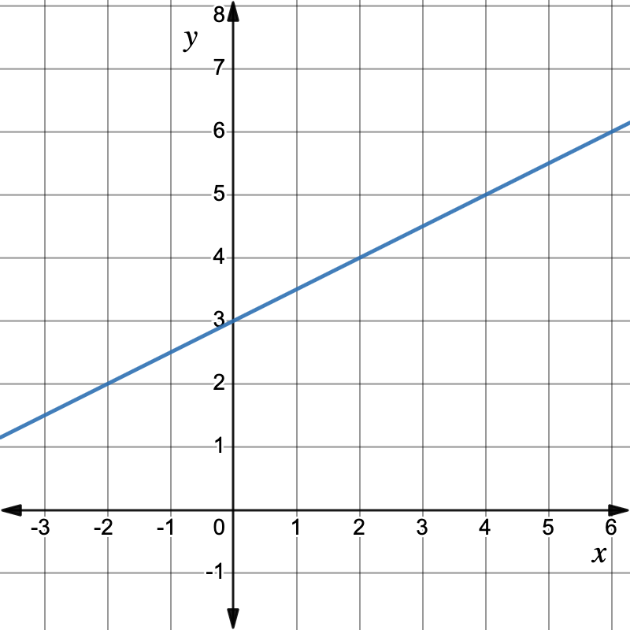

Consider the graph of the function \(f(x) = \frac{1}{2}x+3\) below and the limit \(\ds\lim_{x\to 2} f(x)\text{.}\)

The limit asks us to consider what value the function \(f(x)= \frac{1}{2}x+3\) approaches as \(x\) approaches 2. We can see in the picture that the \(y\)-values of the function approach 4, and that this is also what we get when we evaluate the function at 2 since \(f(2) = \frac{1}{2}(2)+3 = 1+3 = 4\text{.}\) For this limit and this function, it is the case that
\begin{equation*}
\lim_{x\to 2}f(x) = f(2)=4
\end{equation*}
so that taking the limit is the same as evaluating the function. There is a particular name for this situation where the value of the limit is the same as the function’s value: such a function is called continuous.